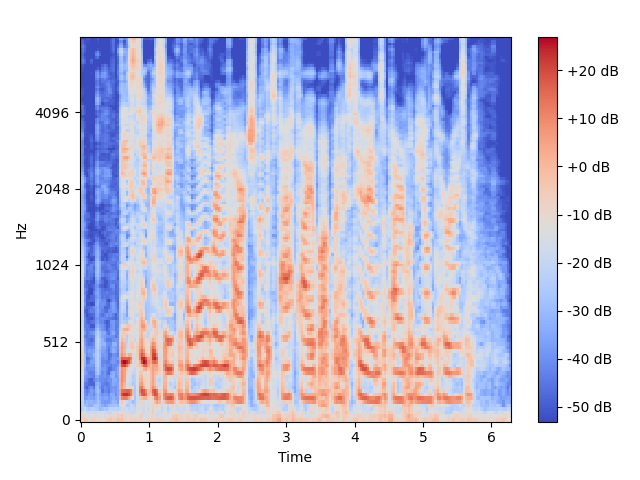
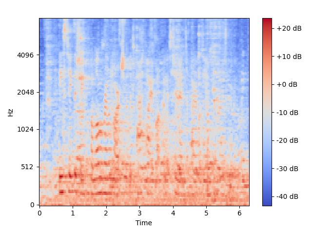
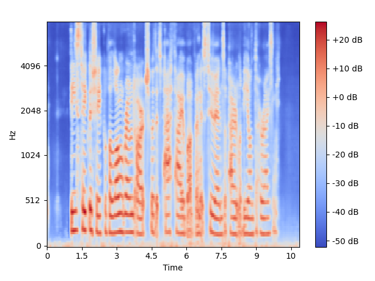

A neural audio enhancement system that removes reverberation and background noise from speech signals using a dual U-Net architecture trained end-to-end on spectrograms.
The goal of this project is to remove reverberation and background noise. This project tackles both problems in a single trained pipeline by combining two specialist neural networks, one dedicated to each artifact, and chaining them in the order that empirically works best.
Built on top of the open-source Neural-Speech-Dereverberation codebase by Leon and Tobar. My work focused on:
Collected speech datasets and built custom data pool by reverberating the samples with convolution, and adding different kinds of noise to them.
Redesigned the training orchestrator and data pipeline to support dual-model chaining, custom dataset loading, and SLURM-based HPC batch submission.
Modified individual functions within the LS-UNET (dereverberation) and standard U-Net (denoising) architectures to accept chained spectrogram inputs and share a common output format.
Ran multiple rounds of hyperparameter search across learning rate, batch size, and model depth until results were satisfying both by MSE metric and by ear.
Integrated five objective speech quality metrics to quantitatively evaluate models at every stage of the pipeline across pre-training and fine-tuning.
The system runs two networks in sequence, operating on mel-spectrograms of the input signal. The frequency range is focused on 20 to 8300 Hz, the range relevant for speech intelligibility.
Ordering matters: dereverberation before denoising consistently outperformed the reverse. Simple concatenation was used to combine the two models into the final architecture.
Spectrograms show the model successfully tightening the smeared signal and unwanted artifacts.


